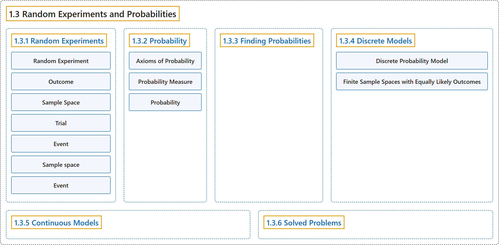

1.3 Random Experiments and Probabilities
Classification

Glossary
| Term | Definition | 中文翻译 | Source |
|---|---|---|---|
| 1.3 Random Experiments and Probabilities 随机试验与概率 |
(No definition) | （无定义） | Pishro-Nik, 2014, section 1.3 |
| 1.3.1 Random Experiments 随机试验 |
(No definition) | （无定义） | Pishro-Nik, 2014, section 1.3.1 |
| Random Experiment 随机试验 |
"In particular, a random experiment is a process by which we observe something uncertain." | 具体地说，随机试验是我们观察某种不确定事物的一个过程。 | Pishro-Nik, 2014, section 1.3.1 |
| Outcome 结果（样本点） |
"An outcome is a result of a random experiment." | 结果（样本点）是随机试验的一个结果。 | Pishro-Nik, 2014, section 1.3.1 |
| Sample Space 样本空间 |
"The set of all possible outcomes is called the sample space." | 所有可能结果构成的集合称为样本空间。 | Pishro-Nik, 2014, section 1.3.1 |
| Trial 试验（一次） |
"When we repeat a random experiment several times, we call each one of them a trial." | 当我们把一个随机试验重复若干次时，把其中每一次称为一次试验。 | Pishro-Nik, 2014, section 1.3.1 |
| Event 事件 |
"Thus an event is a collection of possible outcomes. In other words, an event is a subset of the sample space to which we assign a probability." | 因此，事件是可能结果的一个集合。换言之，事件是样本空间的一个子集，我们为它指派一个概率。 | Pishro-Nik, 2014, section 1.3.1 |
| Sample space 样本空间 |
"Informally, the sample space for a given set of events is the set of all possible values the events may assume." | 非正式地说，一组给定事件的样本空间是这些事件可能取的所有可能值的集合。 | Weisstein, n.d.-e, "Sample space" entry, para. 1 |
| Event 事件 |
"An event is a certain subset of a probability space. Events are therefore collections of outcomes on which probabilities have been assigned." | 事件是概率空间的某个子集。因此，事件是一些已被赋予概率的结果的汇集。 | Weisstein, n.d.-c, "Event" entry, para. 1 |
| 1.3.2 Probability 概率 |
(No definition) | （无定义） | Pishro-Nik, 2014, section 1.3.2 |
| Axioms of Probability 概率公理 |
"Axiom 1: For any event \(A\), \(P(A) \geq 0\). Axiom 2: Probability of the sample space \(S\) is \(P(S)=1\). Axiom 3: If \(A_1, A_2, A_3, \cdots\) are disjoint events, then \(P(A_1 \cup A_2 \cup A_3 \cdots)=P(A_1)+P(A_2)+P(A_3)+\cdots\)" | 公理 1：对任意事件 \(A\)，\(P(A) \geq 0\)。公理 2：样本空间 \(S\) 的概率为 \(P(S)=1\)。公理 3：若 \(A_1, A_2, A_3, \cdots\) 为互不相交的事件，则 \(P(A_1 \cup A_2 \cup A_3 \cdots)=P(A_1)+P(A_2)+P(A_3)+\cdots\) | Pishro-Nik, 2014, section 1.3.2 |
| Probability Measure 概率测度 |
"We assign a probability measure \(P(A)\) to an event \(A\). This is a value between \(0\) and \(1\) that shows how likely the event is." | 我们为事件 \(A\) 指派一个概率测度 \(P(A)\)。它是介于 \(0\) 和 \(1\) 之间的值，表示该事件有多大可能发生。 | Pishro-Nik, 2014, section 1.3.2 |
| Probability 概率 |
"In common usage, the word 'probability' is used to mean the chance that a particular event (or set of events) will occur expressed on a linear scale from 0 (impossibility) to 1 (certainty), also expressed as a percentage between 0 and 100%." | 在日常用法中，“概率”一词指某个特定事件（或一组事件）发生的可能性，用从 0（不可能）到 1（必然）的线性刻度表示，也可表示为 0 到 100% 之间的百分比。 | Weisstein, n.d.-d, "Probability" entry, para. 1 |
| 1.3.3 Finding Probabilities 求概率 |
(No definition) | （无定义） | Pishro-Nik, 2014, section 1.3.3 |
| 1.3.4 Discrete Models 离散模型 |
(No definition) | （无定义） | Pishro-Nik, 2014, section 1.3.4 |
| Discrete Probability Model 离散概率模型 |
"If \(S\) is a countable set, this refers to a discrete probability model." | 若 \(S\) 是可数集，则称为离散概率模型。 | Pishro-Nik, 2014, section 1.3.4 |
| Finite Sample Spaces with Equally Likely Outcomes 等可能的有限样本空间（古典概型） |
"An important special case of discrete probability models is when we have a finite sample space \(S\), where each outcome is equally likely, i.e., \(S=\{s_1,s_2,\cdots,s_N\}, \textrm{ where } P(s_i)=P(s_j) \textrm{ for all }i,j \in \{1,2,\cdots,N\}.\)" | 离散概率模型的一个重要特例是：有一个有限样本空间 \(S\)，其中每个结果都等可能，即 \(S=\{s_1,s_2,\cdots,s_N\}, \textrm{ where } P(s_i)=P(s_j) \textrm{ for all }i,j \in \{1,2,\cdots,N\}.\) | Pishro-Nik, 2014, section 1.3.4 |
| 1.3.5 Continuous Models 连续模型 |
(No definition) | （无定义） | Pishro-Nik, 2014, section 1.3.5 |
| 1.3.6 Solved Problems 例题详解 |
(No definition) | （无定义） | Pishro-Nik, 2014, section 1.3.6 |
References
Pishro-Nik, H. (2014). Introduction to probability, statistics, and random processes. Kappa Research. Retrieved October 28, 2026, from https://www.probabilitycourse.com/
Weisstein, E. W. (n.d.-d). Probability. MathWorld: A Wolfram Resource. Retrieved October 27, 2026, from https://mathworld.wolfram.com/Probability.html
Weisstein, E. W. (n.d.-c). Event. MathWorld: A Wolfram Resource. Retrieved October 27, 2026, from https://mathworld.wolfram.com/Event.html
Weisstein, E. W. (n.d.-e). Sample space. MathWorld: A Wolfram Resource. Retrieved October 27, 2026, from https://mathworld.wolfram.com/SampleSpace.html